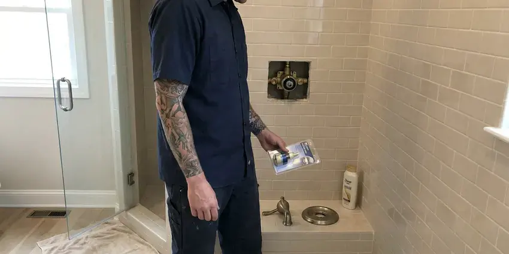
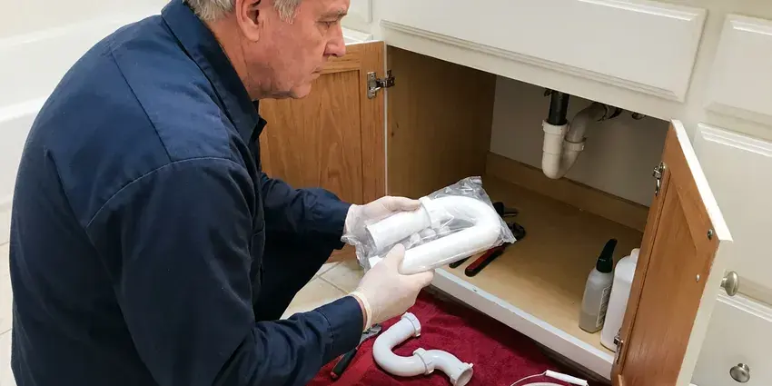

Toilet Bowl Replacement in Salt Lake City, UT
For professional toilet bowl replacement in Salt Lake City, UT, trust the experienced plumbers at BPK Plumbing. We handle all makes and models with care.
- Fast Service Available
- Floor Damage Checked
- Skilled, Licensed Technicians
- Brand-Matched Bowls Sourced

Matched Toilet Bowl Replacement Without a Full Remodel in Salt Lake City, UT.
Don't let a damaged toilet disrupt your home. Schedule your replacement with BPK Plumbing today.
Your Local Choice for Toilet Bowl Replacement in Salt Lake City, UT
BPK Plumbing replaces cracked, chipped and permanently stained toilet bowls while keeping your existing tank when it is in good shape. We identify the model, source a matching bowl and reinstall the tank with new bolts and a new tank-to-bowl gasket. It is a sensible fix when you like your toilet and only the bowl has failed.
Our expertise includes:
- Model identification and sourcing of matching replacement bowls
- Compliance with all local plumbing codes.
- Precise installation of new, water-efficient models.

Additional Bathroom Plumbing Services in Salt Lake City, UT
From toilets to showers, our bathroom plumbing team in Salt Lake City, UT repairs, installs, and replaces every fixture with clean, code-compliant work.




Salt Lake City shower repair specialists


Customers
Why Choose BPK Plumbing for Toilet Bowl Replacement in Salt Lake City, UT?
We stand behind our work with a satisfaction guarantee, giving you peace of mind that your new toilet bowl will serve your Salt Lake City home dependably for years to come.
- Quality Products, We partner with reputable manufacturers to offer a selection of durable, water-efficient toilet bowls that save you money on utility bills and last longer.
- Skilled Technicians, Our plumbers are highly trained and experienced in all types of toilet installations and replacements.
- Model Matching, We confirm the bowl fits your tank, rough-in and bolt pattern before ordering.
Citywide Coverage
From downtown to the farthest suburbs, our team is equipped to handle your toilet bowl replacement needs across Salt Lake City. We prioritize rapid response times to minimize inconvenience for our local customers.
Experienced Team
The BPK Plumbing team is regularly updated on the latest plumbing techniques and local codes for toilet installations. This expertise means your toilet bowl replacement is done right the first time, providing lasting peace of mind.
Safety-First Approach
All toilet bowl replacements performed by BPK Plumbing adhere strictly to Utah plumbing codes and safety standards. We make sure of proper venting, secure mounting, and correct water supply connections to prevent future problems.
Trusted Certified Salt Lake City Plumbing Services Professionals
At BPK Plumbing, we take pride in providing licensed, certified plumbing services throughout Salt Lake City, UT. Backed by recognized industry credentials, our experienced plumbers combine technical skill with genuine customer care. Whether it is repair, installation, or maintenance, we follow strict safety and quality standards to deliver lasting results you can trust.
Call Us Now PHCC Plumbing Contractor Recognition
PHCC Plumbing Contractor Recognition Better Business Bureau (BBB) Accreditation
Better Business Bureau (BBB) Accreditation Angi Certified Pro
Angi Certified Pro ISO 9001 Quality Management Certification
ISO 9001 Quality Management CertificationPrecise Toilet Bowl Replacement Services in Salt Lake City, UT
Toilet Bowl Replacement for Older Homes in Salt Lake City, UT
Older homes in Salt Lake City, UT sometimes have unique plumbing configurations or cast iron drain pipes that require careful handling during a toilet bowl replacement. Our team has broad experience working with older plumbing systems. We take precautions to avoid damaging existing pipes and make sure the new toilet bowl fits cleanly with your home's older infrastructure. We can also advise on any necessary minor upgrades to support long-term reliability.

Cracked or Damaged Toilet Bowl Replacement in Salt Lake City
A cracked toilet bowl can lead to serious water leaks and potential floor damage. We quickly assess the extent of the damage, from hairline fractures to major breaks, and recommend the most suitable replacement. Our service includes careful removal of the old bowl, inspection of the flange, and installation of a new, durable fixture. We make sure all connections are sealed properly to prevent future leaks, protecting your subfloor and the structure beneath it.
Tank-to-Bowl Leak Repair and Replacement in Salt Lake City
Water dripping from the bolts between the tank and bowl often means a failed gasket or corroded hardware. In some cases the porcelain around the bolt holes has cracked, which calls for a new bowl. We inspect the bolt holes carefully and replace gaskets, washers and bolts with stainless or brass hardware. The repair stops the drip and protects the floor below.
Replacing Severely Stained Toilet Bowls in Salt Lake City, UT
Utah water is among the hardest in the country in many areas, and scale builds up quickly in water heaters, faucets and appliances. Water high in minerals like iron can leave permanent stains in toilet bowls that no amount of scrubbing can remove. If your toilet bowl is discolored beyond cleaning, a replacement can dramatically improve your bathroom's appearance and hygiene. We help you select a new bowl that resists staining, considering the local water quality in Salt Lake City. Our installation includes careful cleaning of the floor area and proper disposal of your old, stained bowl.
Inefficient or Old Toilet Upgrades in Salt Lake City, UT
Older toilets, especially those from before 1994, use significantly more water per flush than modern, high-efficiency models. Upgrading your toilet bowl in Salt Lake City can drastically reduce your water bill and conserve resources. We offer a range of WaterSense-certified options, including dual-flush and low-flow toilets, ensuring compliance with current plumbing efficiency standards and providing long-term savings.
Chipped or Stained Bowl Replacement in Salt Lake City, UT
Deep chips can harbor bacteria, and hard water can leave rings and stains that no cleaner removes. If the rest of your toilet works well, replacing only the bowl can restore a clean look for less than a full new toilet. We match color, especially on biscuit or bone fixtures, so the tank and bowl look right together. White is easiest to match across years.
Emergency Toilet Bowl Replacement in Salt Lake City, UT
A severely cracked or overflowing toilet bowl can constitute an emergency, requiring immediate attention to prevent extensive water damage. BPK Plumbing offers emergency toilet bowl replacement services in Salt Lake City, UT. We respond fast to limit damage, safely remove the compromised fixture, and install a new toilet to restore functionality and peace of mind.

Emergency Bowl Replacement in Salt Lake City
A bowl that cracks suddenly can dump water across the floor and into walls or ceilings below. Shut off the angle stop behind the toilet and call us right away. We stop the leak, remove the broken bowl safely and install a replacement or a full new toilet as fast as possible. We also advise on drying and checking for water damage.
Toilet Bowl Replacement Near Me in Salt Lake City, UT
When you search for 'toilet bowl replacement near me' in Salt Lake City, UT, BPK Plumbing is your dependable local choice. Our team is located to provide fast, efficient service to all neighborhoods, so we can respond quickly to your plumbing needs.
When you search for 'toilet bowl replacement near me' in Salt Lake City, UT, you're looking for fast, reliable service from a local company. BPK Plumbing is your trusted neighborhood plumbing expert, always ready to send skilled technicians to your door.
BPK Plumbing at a Glance
- Licensed and insured plumbers serving Salt Lake City, UT
- Same-day appointments and 24/7 emergency response
- Upfront, flat-rate pricing before work begins
- 4.8-star rated by 470+ Utah customers
Salt Lake City Map
Salt Lake City Information
- Population
- 209,593
- Area codes
- 801/385/435
- Service area
- Salt Lake City and communities within 40 miles
- Nearby
- West Valley City, Millcreek, Taylorsville, Murray
Soils in Utah vary from clay that swells when wet to rocky benches and collapsible soils that settle when they take on water. Careful toilet bowl replacement is vital for homes in Salt Lake City, UT, because shifting floors and foundations can strain plumbing connections over time.
Expert Services
Trust our professionals for reliable BPK Plumbing solutions in Salt Lake City, UT.
Our Specialized Plumbing Services in Salt Lake City, UT
At BPK Plumbing, we provide a complete range of plumbing services across Salt Lake City, UT. From leak detection to full system installations, our team ensures fast, precise, and affordable service for both residential and commercial properties. Explore our core services below:


How Our Toilet Bowl Replacement Process Works in Salt Lake City, UT
Replacing a toilet bowl is simple when the right bowl is sourced first. Here is how we do it.
Request a Quote
Contact BPK Plumbing by calling (385) 543-4073 or filling out our online form to schedule an appointment. We'll discuss your needs and provide an initial estimate.
On-Site Assessment
A licensed plumber will visit your Salt Lake City home to inspect your current toilet, assess the damage, and confirm the scope of work for the replacement.
New Toilet Selection
We'll help you choose a new toilet bowl that fits your budget, style, and water efficiency requirements, making sure it's suitable for your Utah home.
Frequently Asked Questions About Toilet Bowl Replacement in Salt Lake City
The cost of toilet bowl replacement in Salt Lake City, UT typically ranges from $400 to $800, depending on the toilet model, any necessary flange repairs, and labor. This includes removal and disposal of the old toilet. We provide a clear quote upfront.
Small cosmetic chips above the waterline can be patched, but cracks below the waterline or near bolt holes cannot be safely repaired. Replacement is the safe choice.
Utah water is among the most mineral-heavy in the country in many areas, and scale builds up quickly in water heaters, faucets and appliances. Hard water can lead to mineral buildup and staining inside your toilet bowl, making it difficult to clean and potentially shortening the lifespan of internal components. Regular cleaning and water softeners can help limit these effects.
BPK Plumbing stands behind our work with a full labor warranty on all toilet bowl replacements. The specific warranty period will be discussed with you, and the toilet bowl manufacturer also provides its own product warranty. We make sure you're covered for both parts and our installation service.
If your toilet is older than 20 years, uses a lot of water or the bowl is hard to source, replacing the whole toilet is usually smarter. If the tank is newer and works well, a bowl swap can save money.
With the matching bowl on hand, the job usually takes 1 to 2 hours. If the bowl must be ordered, it may take a few days to arrive.
Common signs include visible cracks or chips in the ceramic, constant leaking at the base that a new wax ring won't fix, a wobbly toilet, or a very old toilet that frequently clogs or runs continuously.
A crack that is leaking is urgent because water can soak into flooring and walls. Turn off the shutoff valve behind the toilet and call a plumber immediately.
What People Are Saying About Our Plumbing Experts?

Daniel K.
A pipe burst at 11 pm and they actually answered. The plumber showed up within the hour, shut everything down, and had us back to normal the next morning. Could not ask for more.
Emergency Plumbing · Taylorsville, UT
Patricia H.
We had a slab leak that two other companies could not find. BPK Plumbing located it in under an hour, explained our options, and the price matched the quote to the dollar.
Slab Leak Repair · Sandy, UT
James P.
Our commercial plumbing system had a leak under the sink, and BPK Plumbing handled it professionally. The plumbers arrived quickly and restored everything without disruption to our customers.
Commercial Plumbing · Taylorsville, UTRobert G.
The trenchless sewer replacement saved our front yard. They walked us through the camera inspection footage first so we knew exactly what we were paying for.
Sewer Line Replacement · Murray, UT
Sofia M.
Two new toilets installed in one visit, no mess left behind, and the tech even adjusted a faucet he noticed was dripping. Fair pricing and really friendly.
Toilet Installation · Murray, UTLaura S.
I scheduled a water heater replacement, and the team made the process smooth and affordable. The new unit works perfectly, and they cleaned up after completing the job.
Water Heater Replacement · Sandy, UT